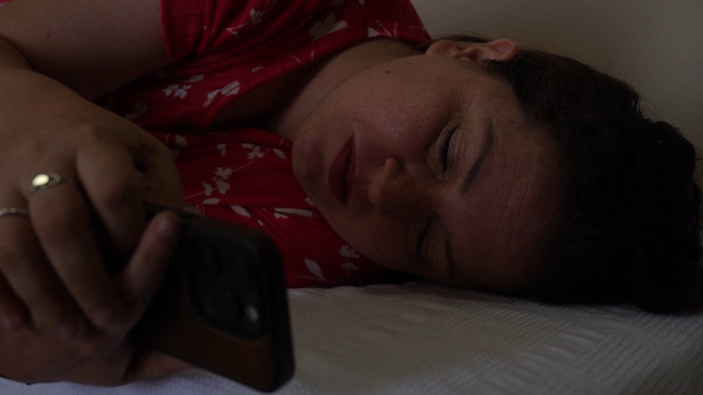

El calor nocturno puede afectar la memoria, el ánimo y la concentración. EsSalud recomienda hábitos simples para mejorar el sueño y evitar el agotamiento durante el día.
Fuente: Seguro Social de Salud (EsSalud).
Dormir mal por el calor no solo provoca cansancio al día siguiente: también puede afectar la memoria, la concentración, el estado de ánimo y el rendimiento laboral. Ante las noches calurosas, el Seguro Social de Salud (EsSalud) advirtió sobre las consecuencias de un descanso insuficiente y compartió recomendaciones prácticas para proteger la salud física y mental.
Cuando la temperatura ambiente se mantiene alta durante la noche, el cuerpo tiene más dificultad para bajar su temperatura interna, un proceso natural que ayuda a iniciar y mantener el sueño. Como resultado, muchas personas tardan más en dormirse, se despiertan varias veces o se levantan sin sentirse descansadas.
La neuropsicóloga Ana María Cruz Quispe, del Hospital Nacional Edgardo Rebagliati Martins de EsSalud, explicó que la falta de sueño reparador puede afectar funciones cerebrales clave como la atención, la memoria, el aprendizaje y el control de las emociones. En el día a día, esto se traduce en más errores, menor concentración y mayor irritabilidad.
“La persona se vuelve más irritable y tiene poca tolerancia a la frustración. Debido al agotamiento y la fatiga, puede presentar dificultades para realizar sus actividades habituales”, señaló la especialista. Cuando la falta de descanso se vuelve frecuente, también puede alterar la respuesta al estrés, afectar el equilibrio emocional y, en el largo plazo, asociarse con problemas metabólicos, debilitamiento de defensas y mayor riesgo cardiovascular.
Un ambiente fresco, oscuro y silencioso favorece un sueño reparador en noches de calor.
Los adultos mayores, niños pequeños, gestantes y personas con enfermedades crónicas son más vulnerables durante las noches de altas temperaturas. Estos grupos pueden tener mayor dificultad para regular su temperatura corporal o mantenerse hidratados. Por eso, es importante procurar ambientes ventilados, ofrecer líquidos adecuados durante el día y estar atentos a signos de agotamiento o malestar.
EsSalud recomienda adoptar hábitos simples que ayudan a conciliar el sueño y mejorar su calidad:

Mantener una rutina nocturna y evitar estimulantes ayuda a conciliar el sueño con mayor facilidad.
Si las dificultades para dormir se vuelven frecuentes, afectan las actividades diarias o se acompañan de somnolencia excesiva, ronquidos intensos, pausas respiratorias o malestar persistente, es recomendable acudir a una evaluación médica. Dormir bien no es un lujo: es una necesidad básica para cuidar la memoria, el ánimo y la salud en general.
Pequeños cambios en la rutina nocturna, junto con una hidratación adecuada durante el día, pueden mejorar notablemente la calidad del descanso incluso en temporadas de calor.